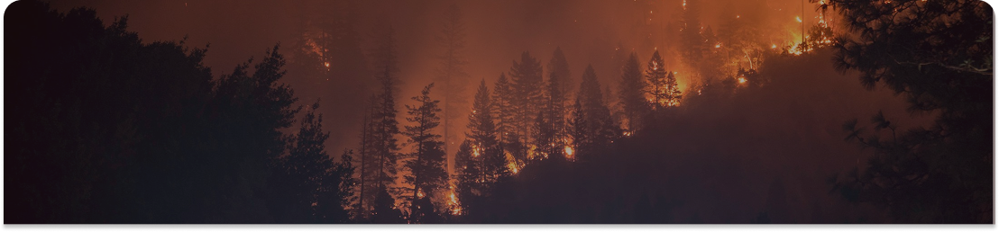
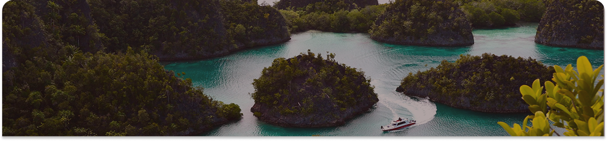

1 Mei 2025
•
5 menit baca
Kebakaran Hutan di Kalimantan Barat Mengancam Habitat Orangutan
Kebakaran hutan yang terjadi di Kalimantan Barat sejak minggu lalu telah menghancurkan lebih dari 850 hektar hutan yang menjadi rumah bagi populasi orangutan terancam punah.
Baca Selengkapnya

1 Mei 2025
•
5 menit baca
Penemuan Spesies Ikan Baru di Perairan Raja Ampat
Tim peneliti hasil ekspedisi Indonesia berhasil menemukan spesies ikan baru yang diyakini endemik di perairan indah dan beragam hayati Raja Ampat.
Baca Selengkapnya
1 Mei 2025
•
6 menit baca
Konservasi Kelautan: Target 30% Kawasan Laut Dilindungi pada 2045
Indonesia memiliki 4% kawasan laut yang dilindungi, mencakup sekitar 9% dari total wilayah maritim. Pemerintah menargetkan perluasan kawasan ini menjadi 30% pada 2045 untuk mendukung konservasi kelautan.
Baca Selengkapnya
Menampilkan 1 sampai 3 dari 150 berita
Tampilkan Perhalaman